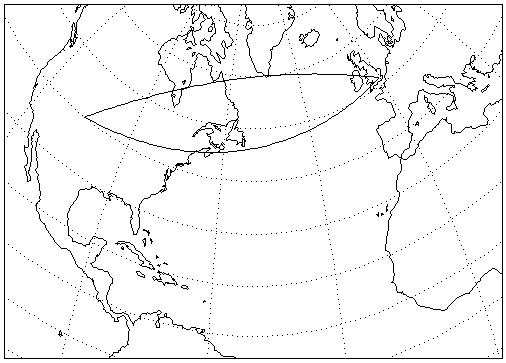

The MAP_2POINTS function returns parameters such as distance, azimuth, and path relating to the great circle or rhumb line connecting two points on a sphere.
This routine is written in the IDL language. Its source code can be found in the file map_2points.pro in the lib subdirectory of the IDL distribution.
Result = MAP_2POINTS( lon0 , lat0 , lon1 , lat1 [, DPATH = value | , / METERS | , / MILES | , NPATH = integer {2 or greater} | , / PARAMETERS | , RADIANS = value ] [, RADIUS = value ] [, / RHUMB ] )
This function returns a two-element vector containing the distance and azimuth of the great circle or rhumb line connecting the two points, P0 to P1, in the specified angular units, unless one or more of the keywords NPATH, DPATH, METERS, MILES, PARAMETERS, or RADIUS is specified. See the keyword descriptions for the return value associated with each of these keywords.
If MILES, METERS, or RADIUS is not set, distances are angular distance, from 0 to 180 degrees (or 0 to !DPI if the RADIANS keyword is set). Azimuth is measured in degrees or radians, east of north.
Longitude and latitude of the first point, P0.
Longitude and latitude of the second point, P1.
Set this keyword to a value specifying the maximum angular distance between the points on the path in the prevalent units, degrees or radians.
Set this keyword to return the distance between the two points in meters, calculated using the Clarke 1866 equatorial radius of the earth.
Set this keyword to return the distance between the two points in miles, calculated using the Clarke 1866 equatorial radius of the earth.
Set this keyword to a value specifying the number of points to return. If this keyword is set, the function returns a (2, NPATH) array containing the longitude/latitude of the points on the great circle or rhumb line connecting P0 and P1. For a great circle, the points will be evenly spaced in distance, while for a rhumb line, the points will be evenly spaced in longitude.
Note: This keyword must be set to an integer of 2 or greater.
Set this keyword to return the parameters determining the great circle connecting the two points, [sin(c), cos(c), sin(az), cos(az)], where c is the great circle angular distance, and az is the azimuth of the great circle at P0, in degrees east of north.
Set this keyword if inputs and angular outputs are to be specified in radians. The default is degrees.
Set this keyword to a value (in meters) specifying the radius of the sphere to be used to calculate the distance between the two points. If this keyword is specified, the function returns the distance between the two points calculated using the given radius. If this keyword is not specified, the Clarke 1866 equatorial radius of the earth (6378206.4 meters) is used as the radius for calculations.
Set this keyword to return the distance and azimuth of the rhumb line connecting the two points, P0 to P1. The default is to return the distance and azimuth of the great circle connecting the two points. A rhumb line is the line of constant direction connecting two points.
The following examples use the geocoordinates of two points, Boulder and London:
B = [ -105.19, 40.02] ;Longitude, latitude in degrees.
L = [ -0.07, 51.30]
Print the angular distance and azimuth, from B, of the great circle connecting the two points:
PRINT, MAP_2POINTS(B[0], B[1], L[0], L[1])
IDL prints 67.854333 40.667833
Print the angular distance and course (azimuth), connecting the two points:
PRINT, MAP_2POINTS(B[0], B[1], L[0], L[1],/RHUMB)
IDL prints 73.966283 81.228057
Print the distance in miles between the two points:
PRINT, MAP_2POINTS(B[0], B[1], L[0], L[1],/MILES)
IDL prints 4693.5845
Print the distance in miles along the rhumb line connecting the two points:
PRINT, MAP_2POINTS(B[0], B[1], L[0], L[1], /MILES, /RHUMB)
IDL prints 5116.3571
Display a map containing the two points, and annotate the map with both the great circle and the rhumb line path between the points, drawn at one degree increments:
MAP_SET, /MOLLWEIDE, 40,-50, /GRID, SCALE=75e6,/CONTINENTS
PLOTS, MAP_2POINTS(B[0], B[1], L[0], L[1],/RHUMB, DPATH=1)
PLOTS, MAP_2POINTS(B[0], B[1], L[0], L[1],DPATH=1)
This displays the following map:
|
 |
|
5.4 |
Introduced |